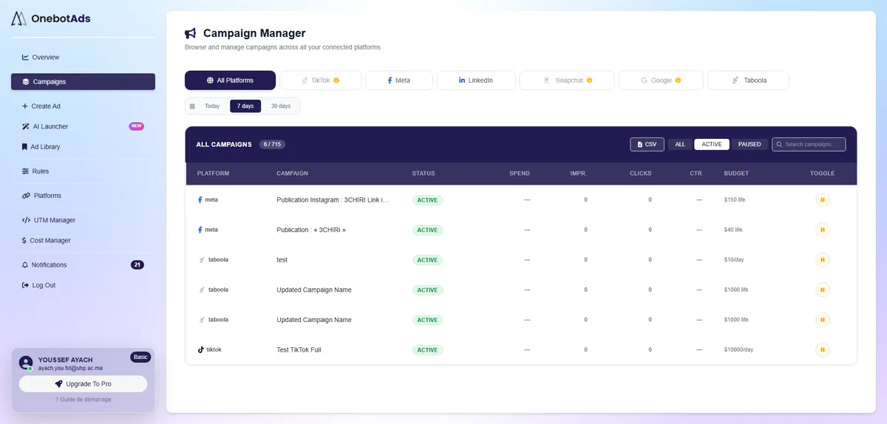
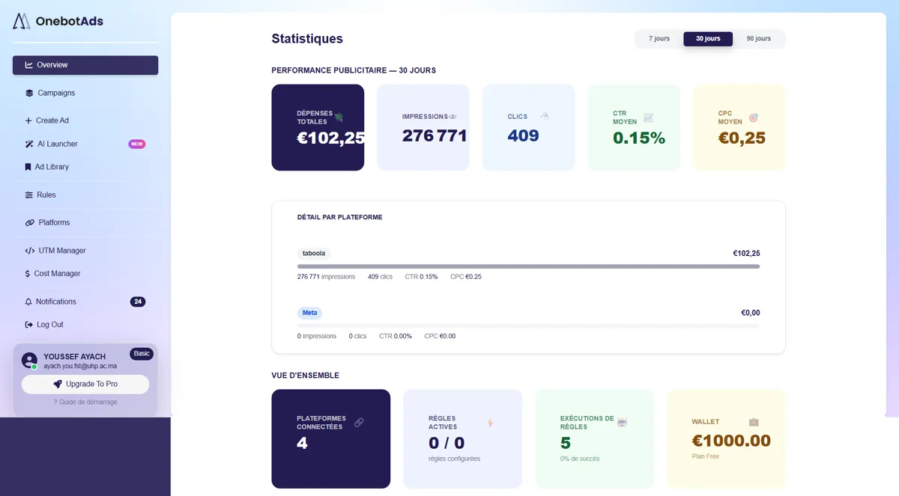
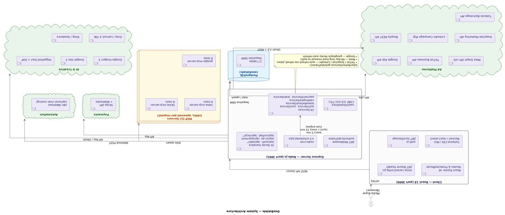

Platform integrations
Full OAuth 2.0 flows plus campaign CRUD against the real APIs of Meta, TikTok, Google Ads, Snapchat, LinkedIn and Taboola — each with its own token lifecycle, handled by a refresh service that knows the rules per platform.
Case study — final-year internship (PFE), Digitalye, 2026
An AI-powered ad-automation SaaS: media buyers connect their Meta, TikTok, Google, Snapchat, LinkedIn and Taboola accounts and run every campaign from one dashboard — or describe the campaign in chat and let the agent build it.
The starting point
When I joined, OneBotAds was a React interface you could click through — and that was all. No database, no API, no connected ad platform, no business logic. Every screen was a promise with nothing behind it.
My internship brief was to make the promise real. Over five months I designed and built the entire technical foundation: OAuth integrations for six ad platforms, a 17-table PostgreSQL schema designed from scratch, ~35 API route groups and ~29 services, payments, and the AI layer that became the product’s flagship feature.
What I built
Full OAuth 2.0 flows plus campaign CRUD against the real APIs of Meta, TikTok, Google Ads, Snapchat, LinkedIn and Taboola — each with its own token lifecycle, handled by a refresh service that knows the rules per platform.
The flagship: a chat assistant that turns a conversation into a launch-ready campaign — filling budgets, audiences, schedules and creatives into the real form. Powered by an LLM orchestrating six MCP tool servers.
Automatic guardrails for running campaigns — pause, boost or alert on metric thresholds, executed by scheduled jobs every few minutes across all connected platforms.
The pipeline that answers “did this ad actually make money?” — Shopify orders matched through UTM parameters back to the exact campaign, producing real ROAS instead of platform-reported estimates.
Ad images and video generated in-app from a text prompt, integrated directly into the ad form — Google Imagen and Veo, plus Kling and Higgsfield for video.
Stripe and Revolut checkout with webhook-driven wallet credit, plan limits and a cost manager that tracks spend across every connected account.
The product



How it works
A React 18 client talks to a single Express server over a REST API with JWT auth. The server is organised in layers: route handlers validate and delegate to services (auth, sync, token refresh, rule engine, payments, stats), and only services touch the database — PostgreSQL through Sequelize. Scheduled jobs sync platform data every five minutes and run the rule engine every fifteen.
The AI layer runs as MCP servers spawned per request — separate processes for Meta, TikTok and Google tools, so the agent’s capabilities are isolated from the main API and can fail without taking it down. External clouds hang off the edges: the six ad-platform APIs, the AI and creative providers, and Stripe webhooks for payments.

Deployed on a Linux VPS with PM2 and nginx. Two editions ship from one codebase: the full trueROAS edition and the reduced edition currently in production.
Outcome
OneBotAds went live at onebotads.net on June 23, 2026. A week later I delivered a complete handoff: the source, a documented 17-table schema, environment references, deployment procedure, API reference with Postman collections, and per-topic guides — so the next engineer can run, deploy and extend the product without me in the room.
The product and source code belong to Digitalye; this page shows my role, the architecture, and the shipped result.